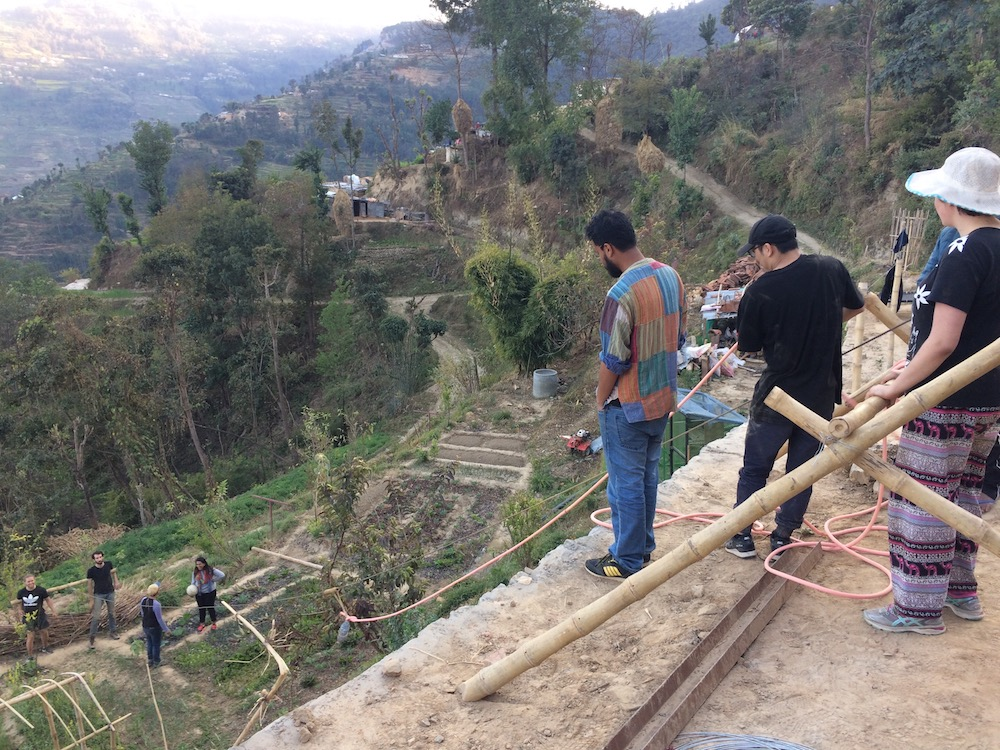

Nepal, 2017
Laika Academy is an Australian-based social enterprise providing innovative educational programs. The focus is on immersive, overseas experiences for university students.
Working with local organisation Abari, the Global Challenges Study Tour in Nepal focused on the architecture, design and engineering required needed to build a strong community, as well as understanding the effects of the recent earthquake.
